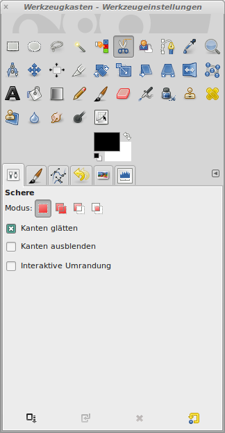

Bildteile freistellen
Auf dem folgenden Bild soll das Jakobertor ausgeschnitten werden. Er wird später in ein anderes Bild eingefügt werden.
 |
| Abb. 1: Das Jakobertor in Augsburg |
Die Konturen eines Bildes lassen sich sehr effektiv mit dem Werkzeug "Magnetische Schere" ausschneiden. Dazu werden die Eckpunkte markiert und nach der Vereinigung der Linien duch einen Klick in die Mitte ausgewählt. Die "Magnetische Schere" findet die Konturen selbst.
|  |
| Abb. 2: Werkzeug "Magnetischen Schere" |
 |
| Abb. 3: Markierte Eckpunkte der "Magnetischen Schere" |
Mit der Schnellmaske und dem Pinselwerkzeug können die Kanten nachbearbeitet werden. Eine Weiße Farbe fügt etwas der Auswahl hinzu, Schwarz entfernt wieder. Dazu wurde das Bild mit der + Taste auf 400% vergrößert.
 |
| Abb. 4: Die Schnellmaske ermöglicht es, Kanten genau zu bearbeiten |
In der Gesamtansicht des Bildes mit Schnellmaske lässt sich das Ergebnis der Auswahl kontrollieren
 |
| Abb. 5: Das freigestellte Jakobertor |
© 2009-2017 Michael Roppel